Sanda, Hyogo: things to do, food and stays
Sanda · Hyogo
Sanda
Highlighted on the Hyogo map.
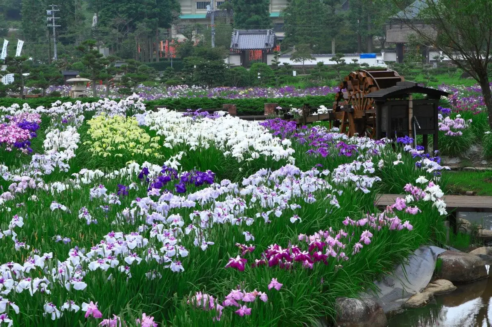
Stay
ホテルルートイン神戸三田-新三田駅前-
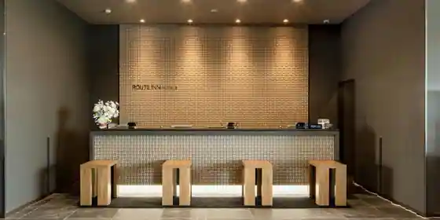
Hotel Route Inn Kobe Mita - Shinmita Ekimae
ANAホリデイ・イン神戸三田 by IHG
ANA Horidei Inn Kobe Mita by IHG
Inn in Keyakidai, Sanda with Wi-Fi and parking.
プラザホテル三田
Plaza Hotel Mita
Hotel in Naka, Sanda; 3-minute walk from Otegoronitomarunarakoko! Station.
三田 ホテルメルクス
Mita Hotel Merukusu
Hotel in Ekimae, Sanda with Wi-Fi and business travelers; 5-minute walk from Jrmita Station.
さんだサンライズホテル
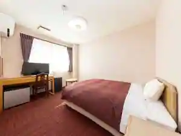
Sanda Sanraizu Hotel
Hotel in Aioi, Sanda; 6-minute walk from Jrmita Station.
さんだサンライズホテル本町
Sanda Sanraizu Hotel Honcho
三田サミットホテル
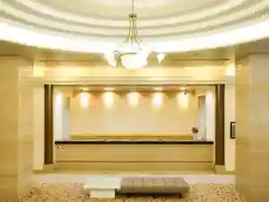
Mita Samitto Hotel
グランアップル神戸三田
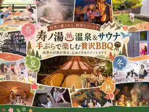
Guran'Appuru Kobe Mita
ホテルルートイン神戸三田
Hotel Route Inn Kobe Mita
Hotel at Betsukomyosekijinko Onsen in Fukushima, Sanda with a large communal bath.
Dining
こにし家
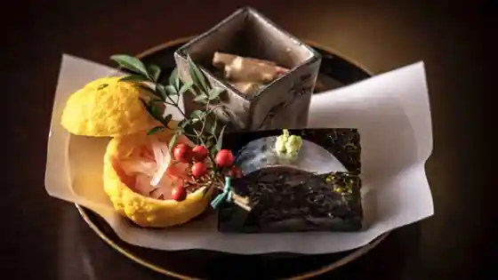
Konishi Ie
パティシエ エス コヤマ
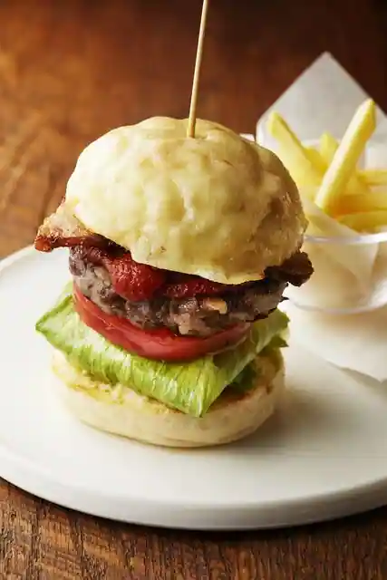
Pateishie Esu Koyama
エス・ブーランジュリー
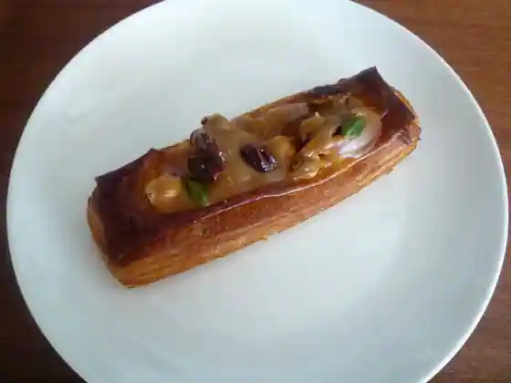
Esu Buranjuri
ショコラトリー ロジラ
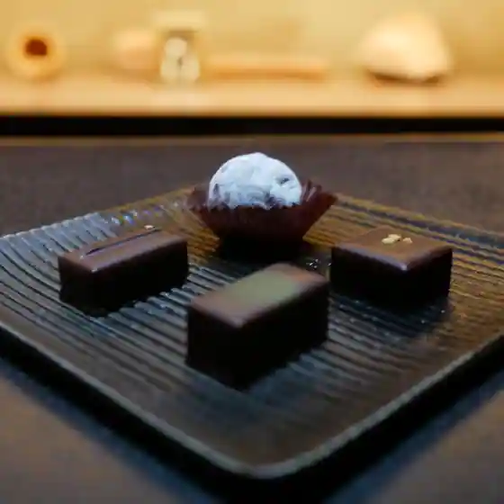
Shokoratori Rojira
吹上の森 三田店
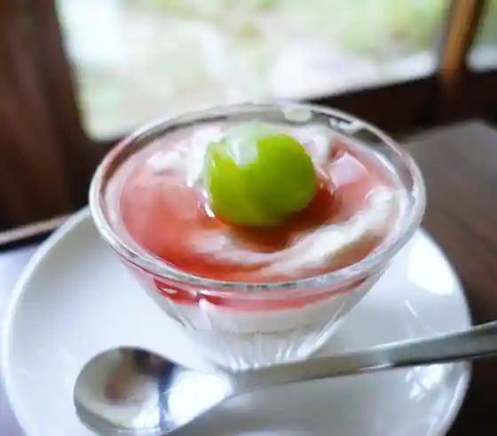
Fukiage No Mori Mita
焼肉ひまわり 三輪本店
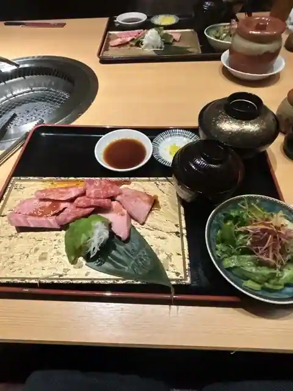
Yakiniku Himawari Miwa Hon
御料理 かわばた
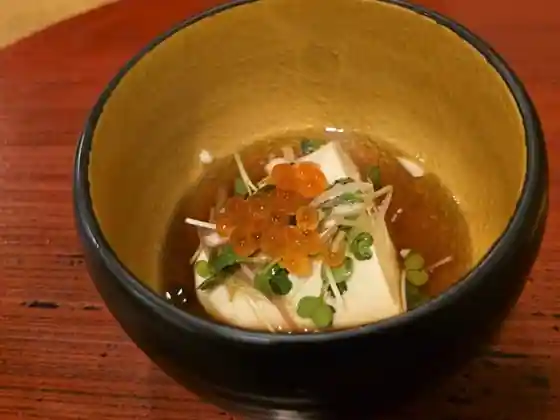
Goryo Ri Kawabata
チャイナダイニングリゥ
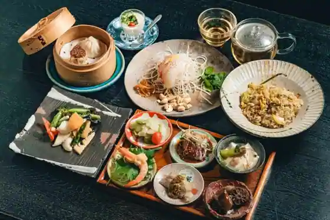
Chaina Dining Riu
パンプキン 新本店
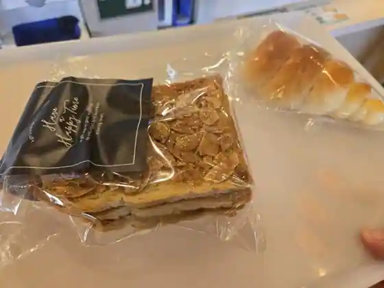
Bakery Pukin Shinpon
アジャン
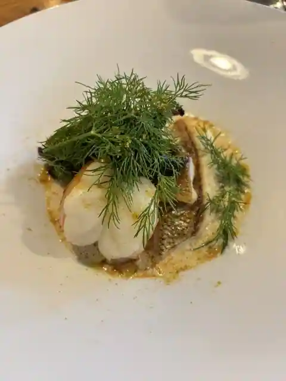
Ajan
コンフィチュール＆マカロン
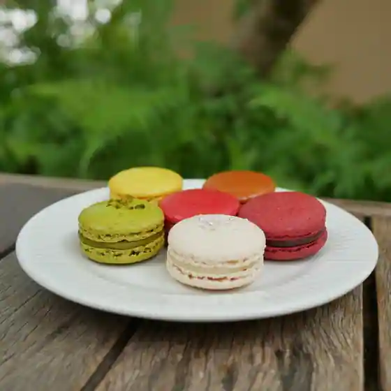
Konfichuru & Makaron
三田屋本店 やすらぎの郷 三田店 本店
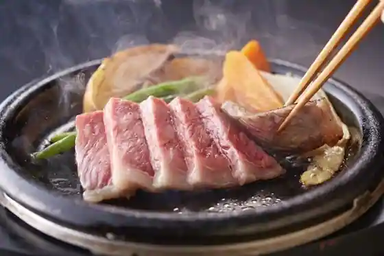
Mita Ya Hon Yasuragino Sato Mita Hon
中国菜 暢叙園
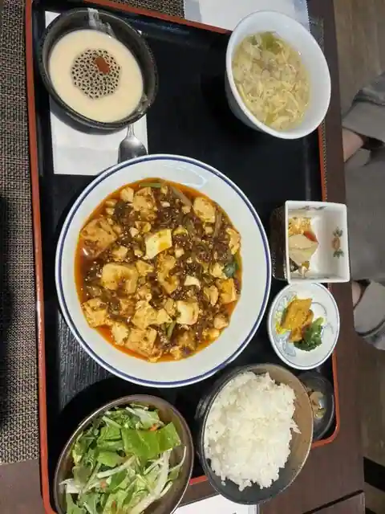
Chugoku Na Nobu Jo Sono
峠の茶屋 一軒家
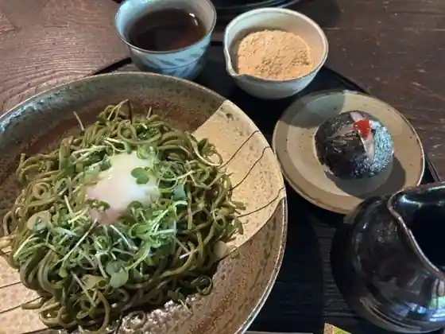
Toge No Chaya Ikkenya
蕎麦 いち
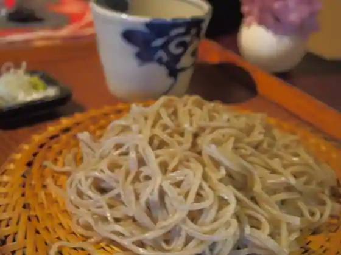
Soba Ichi
らぁめん嬉しや
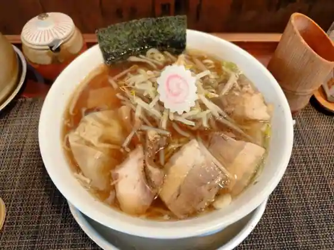
Ramen Ureshi Ya
ラーメン さくらまる 三田店
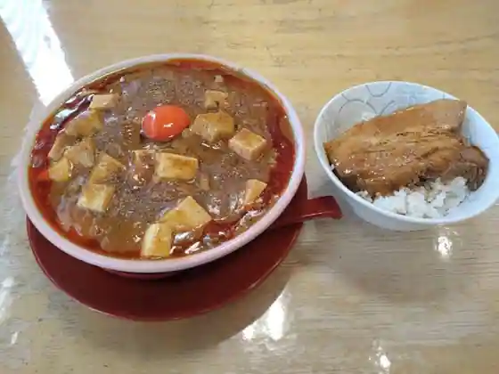
Ramen Sakuramaru Mita
サント・アン 三田本店
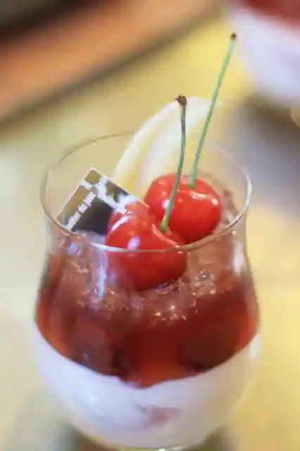
Santo An Mita Hon
十割そば処 山獲
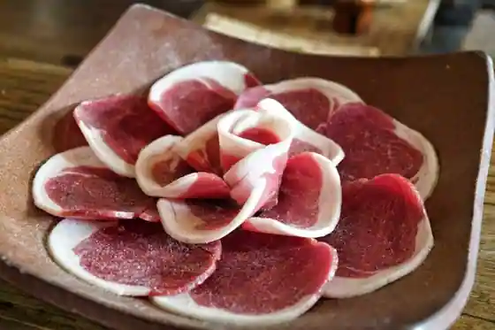
Ju Wari Soba Tokoro Yama Kaku
木器亭
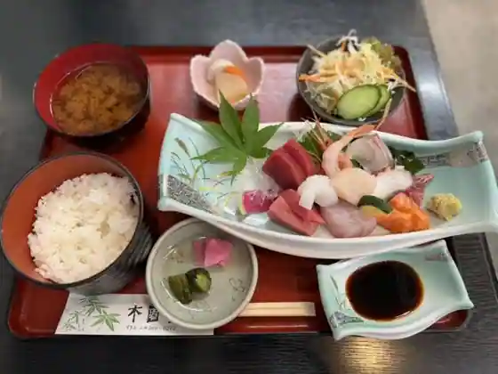
Mokki Tei
三田見野屋
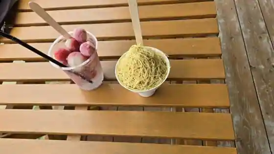
Mita Ken No Ya
焼肉レストラン ひまわり 三田大原店
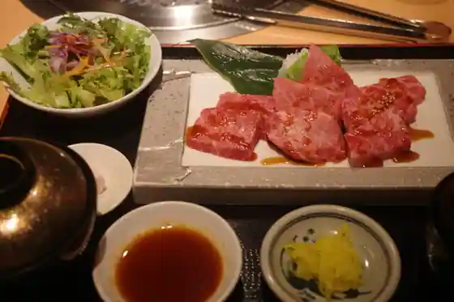
Yakiniku Restaurant Himawari Mita Ohara
国太郎
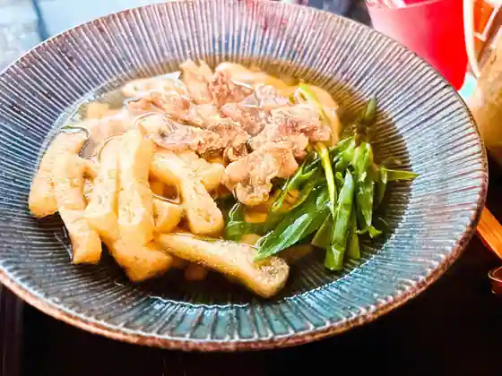
Kunitaro
しい茸園 有馬富士
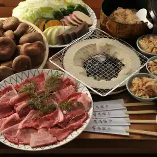
Shi Take Sono Arima Fuji
Sights
Sanda / Nagasawa Tera Hana Shobu Sono